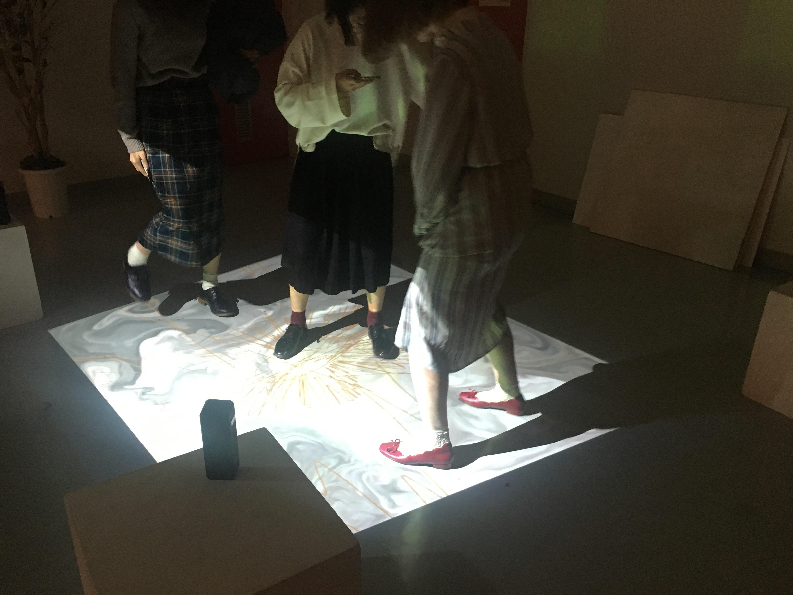
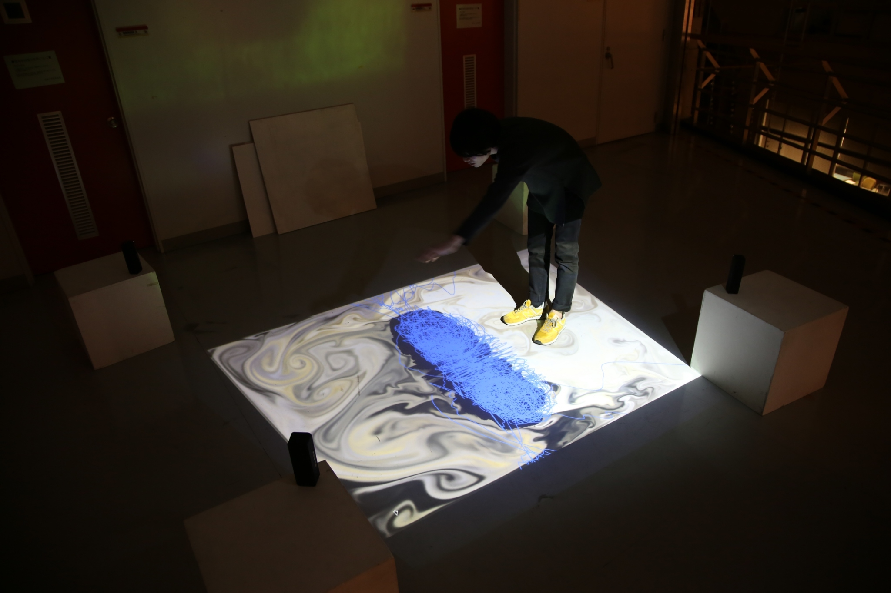
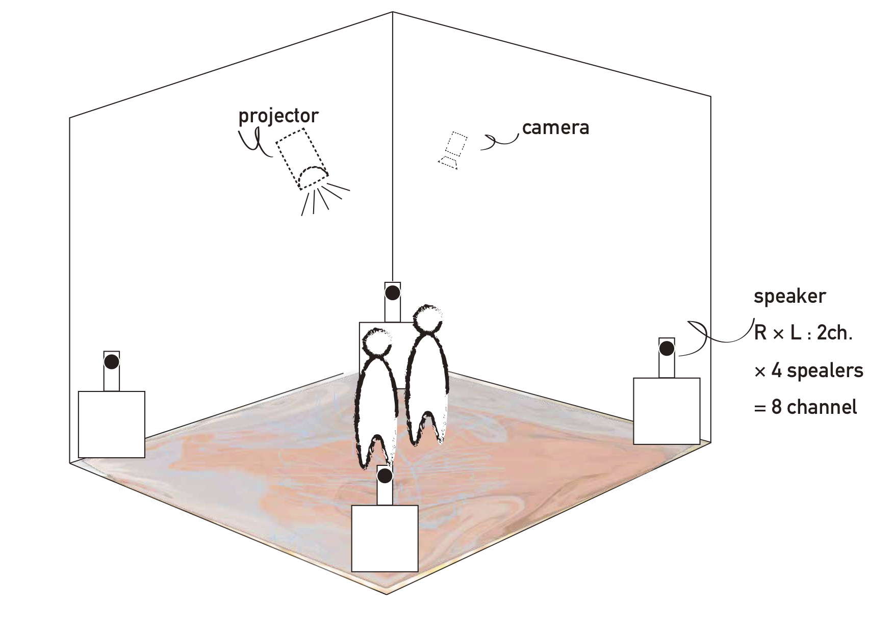
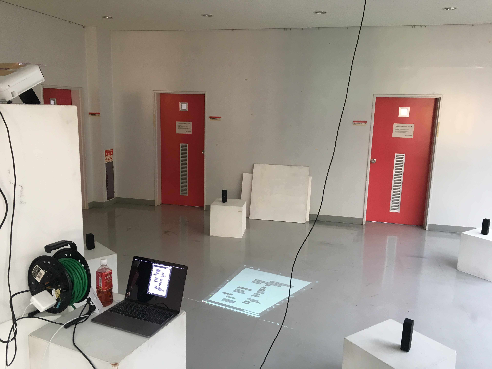

地域創生をテーマにしたインスタレーション作品。「今共有しているこの場」に焦点を当て制作した。「共有したもの」が特別なものであれば記憶に残り、また共有された側(作品側)にもその経験が積まれることで相互的に一回性を脱し、継続的関係を築くことを試みた。
Concept
地域創生にあたって、創生される側は行われる活動に対しどこか冷ややかさを含んでおり、イベントの枠を超えない。
固定化されたものが揺らいだ時、バイアスなく関わり合え、新たな関係を築く。
Summary
制作者自身の出身地である静岡県浜松市には「浜松まつり」があり、この祭りの際に吹かれるラッパの音色は、浜松所縁の者ならば誰しもが幼少期より刷り込まれている。
浜松を構成するその他の「砂丘」や「オートバイ」といった要素の音に囲まれた時、文脈を無視して自身の地元を想起する。
しかしこの時、ラッパ以外の音が全く別の地域の音だったら...
この脆さに、固定概念化していた「地域」を一度崩して、作品に参加してもらう鍵があるのではないか。
その上で鑑賞者と共に作品を作っていくことで、新たな関係を模索する。
Images
-  
About the production
作品設営 : webカメラを天井部に設置,センシング。動体検知を行い動体の重心を元に各々の処理をする。
作品は、「その場」に着眼していることから、8チャンネルの音響設営をし、空間的への没入感を向上させた。
-  